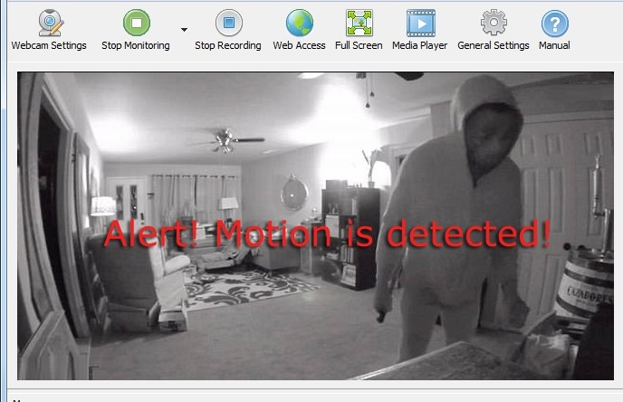
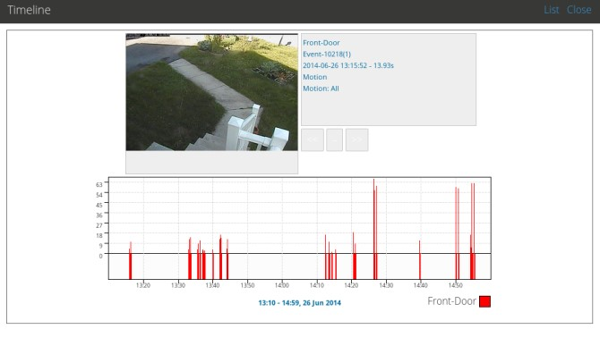
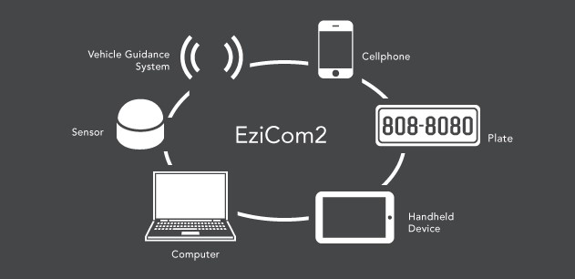
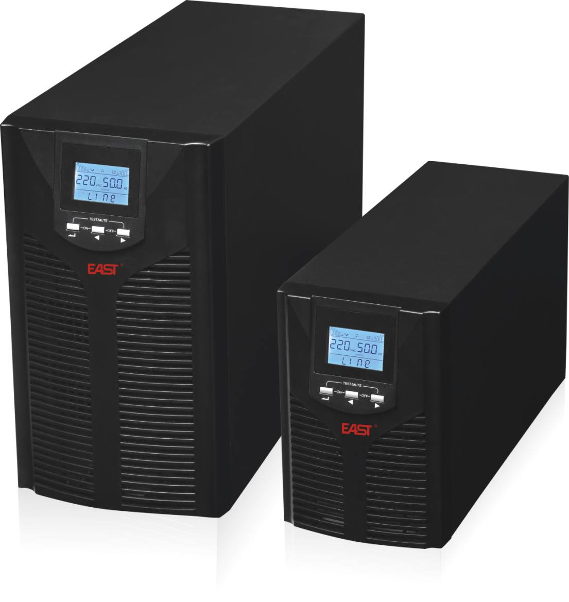

5. PROJECT IDEAS:
a. Overview:
This project is relevant to the security of a place, maybe a house, an office or a company. It is the system of security that can detect which animals or crimes that invade into your private area. By the motion sensors and programming language, it can realize the movement of the object. The software can detect the sound as well. After this information, it will evaluate and send it to the owner by e-mail or SMS notifications. The software will be affiliated with all the cameras and motion sensors in the private places to increase the efficiency of the security.
b. Motivation:
Because of the over-population and lack of employment, the number of crimes is increasing dramatically. For instance, only 3 percent of all crimes in the UK are solved using surveillance systems. In addition, the potential of security cameras is extremely huge, approximately 25 million surveillance cameras are operating around the world. So, with these references, we can see that this problem can be solved by upgrading the more secure software for the security system. Moreover, as I mentioned before, I have an interest in software security in the IT area. As a result, this project is very impressive and reliable that I will take it into this assignment.
c. Description:
The project is worked mainly by the software. It will operate the whole security system, include motion sensors, control panel, alarms, and surveillance cameras. And they are synchronized by wireless like Wi-Fi or Bluetooth.
 - Motion sensors: the main purpose is to detect the movement of people who are invading the working area when they shouldn’t be. The working area of the sensors will depend on what the structure of the owner’s place is. Sensors will work when you are not home, or when you activate the control panel. The type of motion sensor is Passive Infrared (PIR), which can detect both heat and movement. If a moving object blocks too many grid zones and the infrared energy levels change rapidly, a sensor will be tripped a signal is sent to your security system’s control panel and alerting you to a potential threat in your home.
- The alarm: it will be equipped at a place where everyone can hear it, from the owner, the crimes, and the neighbors. It will make a loud sound when the control panel sends the signal to the alarm. And it will stop ringing if the crimes go out the motion sensors working zone or the owner turns off the alarm.
- Surveillance cameras: their mission is to record all the behavior and movement of a current place. They will work 24/7 and the owner can see the record maximum 1 week ago. Also, they include the recorder to record the sound of the crimes, because this can help the police in the investigation. Furthermore, the cameras must have night vision. In order that, the owner can see clearly what is happening at night when the crimes start working most.
 - Control panel: it is the most essential device that contains the security software inside. It will analyze all the information from the sensors and surveillance cameras, and if this information confirm that stranger is the theft, it will send the signal to the alarm and the owners’ smartphone and e-mail immediately. In addition, the software has an AI learner, so in case there is an animal invading the house, it is not a threat and the system is still silent. In case there is no Wi-Fi, it has to send the notifications by SMS immediately. So I will install the SIM Card inside the monitoring center to send the notifications.
- Second software: the owner can also manage the CCTV (Closed-circuit television) by using Smartphones or PCs. It is more flexible that you can know what is happening if you have a vacation or leave far away from your home. Moreover, not only you can watch your house, but you can also adjust the system. For instance, you can turn off the motion sensors or disable the alarm by yourself.
 - In case the electricity will be cut off, I will install a small Uninterruptible Power Supply (UPS). UPS can supply electricity for the whole security system. It will make sure all the system working stably and normally for about 12 hours.
d. Tools and Technologies:
- Software: an operation software that can be installed in Smartphones (Android and iOS) or PCs (Windows, Linux, and macOS) is coded by C++, Java or Swift. It can be affiliate with cameras and sensors as well. And the software inside the monitoring center is coded by C# or Java.
- Hardware: the owners can use any kind of Smartphones or PCs to install the software because it is made to be compatible with many popular OS. And the control panel is the monitoring center that adjusts the software and affiliates with all equipment system.
- Equipment: the owner should buy some kind of security equipment, so that the software can affiliate and operate the system better. The appropriate equipment should be the sensors to detect the motion and high-quality cameras (at least 720p) including the recorder.
e. Skills Required:
- Software development experience in one of the following core languages: Ruby on Rails, Java, Javascript and .NET
- Knowledge about IT area in general, and detailed technical knowledge of techniques, standards and state-of-the-art capabilities.
- Investigate intrusion incidents, conduct forensic investigations and mount incident responses.
- Perform vulnerability testing, risk analyses and security assessments.
Because I have just applied to this IT Bachelor recently, I don’t have much knowledge about the skills required. To achieve these skills and abilities, I had better try to learn harder about security. Also, I should take some internships, so that I can know which knowledge should I improve and build up.
f. Outcome:
Time2 - Blogs. (2019). 16 Facts Worth Knowing About Security and Surveillance Cameras. [online] Available at: https://www.time2technology.com/blog/16-facts-worth-knowing-about-security-and-surveillance-cameras/ [Accessed 6 Nov. 2019].
- I hope this project would be successful, so that I could have more opportunities for my future career, because it can boost my CV.
- Furthermore, if I make it public, I could earn the money from that. However, it is not the main purpose of this project.
- During the project, there are several problems I confronted. To be honest, although this project is very unique and I’m very excited about that, it is quite difficult because I’ve never researched deeply into the IT security area before. So it took me nearly 1 week for just preparation. Also, the equipment makes me confused. When I finished one piece of equipment, there was another problem occurred that I had to install the other one.
- Through these challenges, I can see more about my hard-working, passion for this IT project. And I hope this will be successful that can help customers’ places safer and more secure.
Reference: